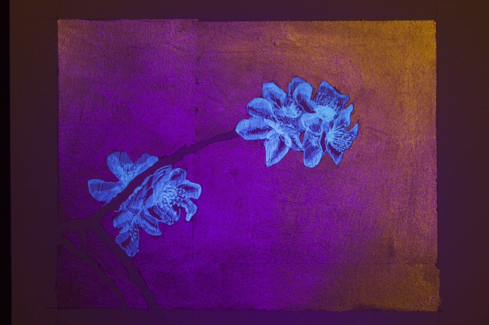
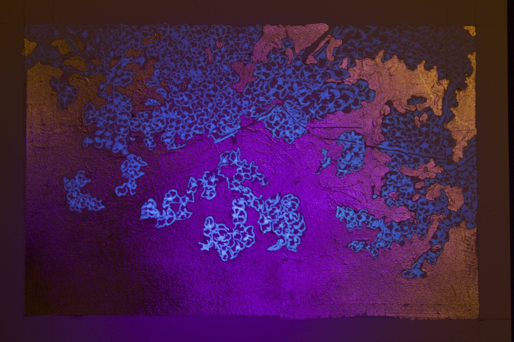
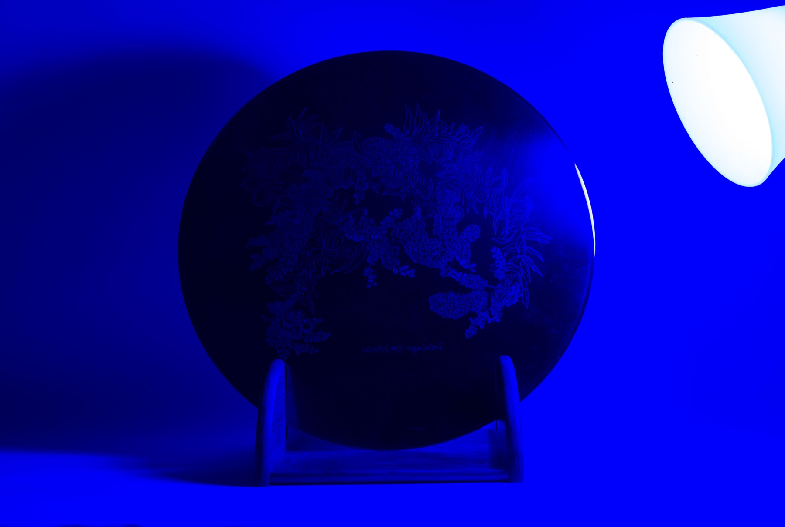
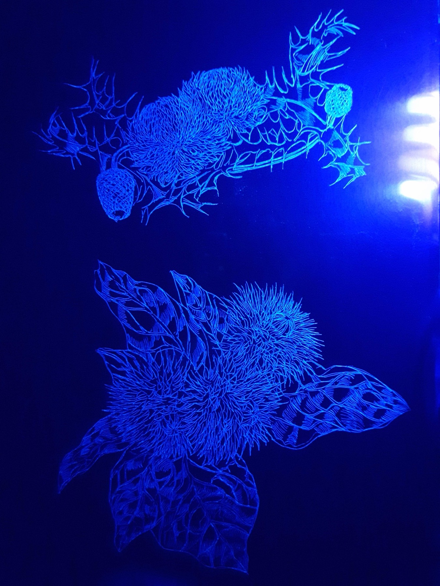
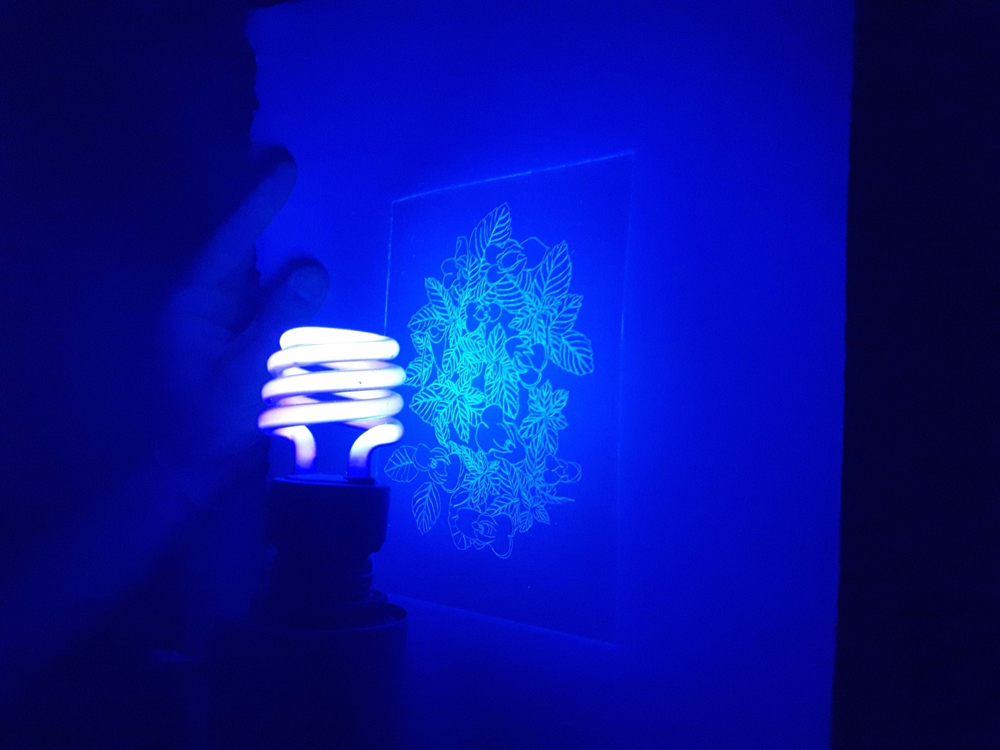
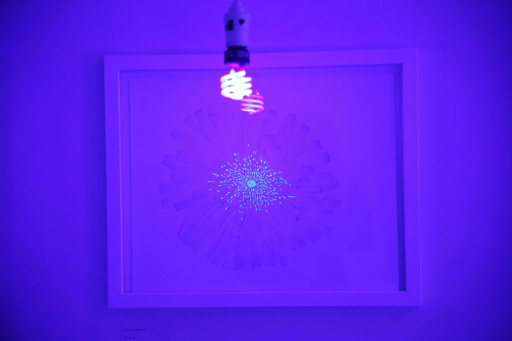
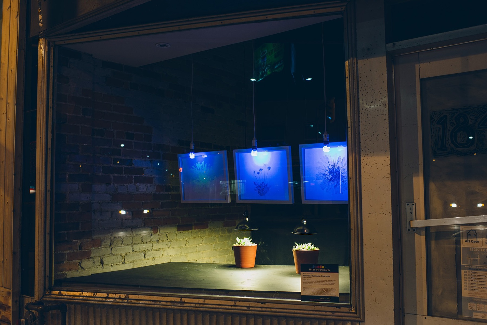
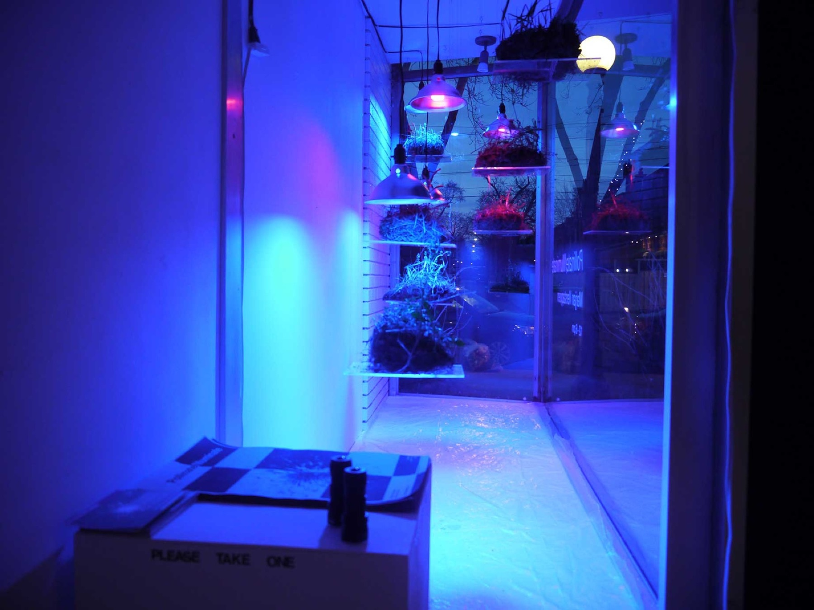
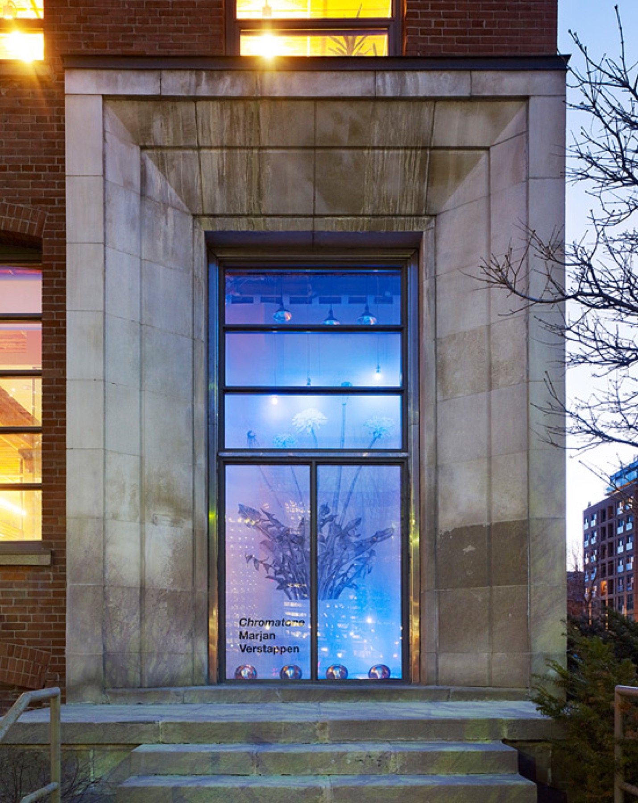

pollinate/illuminate
"The survival of humans and bees is intertwined because we share a food source. I wanted to make something that explored our shared desires. When I learned about the ultraviolet marks on flowers that guide bees towards the pollen, I immediately thought of runway lights guiding planes into land. These drawings are a map for understanding this alien way of experiencing flowers."
Botanical illustrations that consider the perspective of bees — specifically addressing the ultraviolet markings on flowers invisible to human eyes. The work blends human sensation with that of domesticated plants and animals, asking audiences to understand the often-overlooked perspectives of creatures we coexist with.











